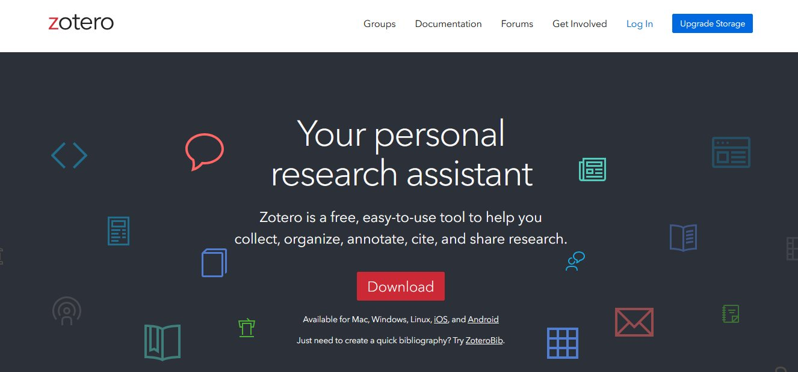

Your lecturer, or the journal, asks you to change every reference from APA to Vancouver. Typed by hand, that is hours of work, and mistakes slip in. With a reference manager, it takes seconds.
This explainer shows what reference managers are, why they matter, and how to use one step by step, with Zotero as the worked example.
For students and researchers at every level. Use Next to move through the pages, or Contents to jump around.
By the end, you should be able to:
Tap each card. Which of these have happened to you?
None of these are about how clever you are. They are about having no system.
A reference manager is software that stores the details of every source you read (authors, title, journal, year, DOI) together with its PDF, in one personal library.
When you write, it inserts citations into your text and builds the reference list for you, in whatever style you choose.
Commonly used reference managers:
Every major reference manager does these four jobs. What differs is the cost, the owner and the details of how each works.
| Tool | Made by | Cost | Worth knowing |
|---|---|---|---|
| Zotero | Digital Scholar (non-profit) | Free, open source | 300 MB of free cloud storage for files |
| Mendeley | Elsevier | Free, account required; 2 GB of free storage | The old Mendeley Desktop stopped being downloadable on 1 September 2022; it was replaced by Mendeley Reference Manager |
| EndNote | Clarivate | Paid | Check whether your institution has a licence |
(Zotero; Mendeley; University of Toronto Libraries; Jisc, 2023)
Look at how each tool describes itself. Tap all three.

It is also actively developed: Zotero 10 was released in August 2026. (Zotero, 2026)
The steps here follow the current version. Menu names may differ slightly in older versions.
Open each one before moving on.
Open the article on PubMed or the journal's website and click the Zotero Connector icon in your browser. The details are saved at once, along with the PDF when you have access to it.
In Zotero, click the magic wand (Add Item by Identifier) and paste a DOI, PMID or ISBN. Zotero looks up the details for you.
Drag the PDF into Zotero. It will try to retrieve the paper's details automatically.
Answer all three to continue.
Captured details are not always clean, and an error in your library becomes an error in your reference list. Tap the fields that are wrong. 0 OF 3 FOUND
The paper is real; the errors were added for practice.
Collections group items by project, assignment or chapter. One item can sit in several collections at once without being duplicated, just as one song can be in many playlists. Removing an item from a collection does not delete it from your library.
Tags are free labels that cut across collections, such as methods or to-read. You can also search by author, title, tag or the full text of your PDFs.
Double-click a PDF to open it in Zotero's built-in reader. Highlight key sentences and add notes. Use colours with a meaning, for example yellow for main findings and red for limitations.
Annotations are stored with the item in your library. You can turn them into a note, and quotes in that note keep a link back to their source.
Zotero 10 adds Reading Mode: a clean, reflowed view without two-column layouts, with adjustable font size. You can still highlight and add notes in it. (Zotero, 2026)
Changing the style in Document Preferences reformats every citation and the whole reference list at once. Try all three styles.
Journals and lecturers often use slightly different versions of a style. Install the exact one you need from the Zotero Style Repository.
In Zotero, open Settings → Cite and click Get additional styles. This opens the Zotero Style Repository. Search for the journal or publisher, then click to install the style.
The workflow is the same. In Google Docs, use the Zotero menu in the top menu bar. In LibreOffice, use the Zotero toolbar. Zotero can also move a cited document between Word, Google Docs and LibreOffice.
Zotero checks your library against the Retraction Watch database. Retracted items are flagged in your items list, with details of the retraction.
If you try to cite a retracted item in Word, Zotero warns you first. If a paper is retracted after you cited it, the warning appears when the document is refreshed.
Check the size of a few of your own PDFs for a realistic average. If storage fills up, items and PDFs stay on your computer; only syncing files to the cloud is limited. Files in a group library count against the group owner's storage. (Zotero; Bates College Library)
A meta-analysis of 46 studies, covering about 32,000 quotations in the medical literature, found that 16.9% were inaccurate: the cited source did not support what the author wrote. About half were major errors (8.0%), and the rate has not improved over time. (Baethge & Jergas, 2025)
Zotero makes sure your references are formatted correctly. It cannot check that a paper actually says what you claim it says.
Made by Aufthority. Learning material for students and researchers at every level. Scenarios and records marked as made up are for practice. Zotero menus may change between versions; check the official documentation.
You can jump to any page from here, even if a page's questions are not finished.